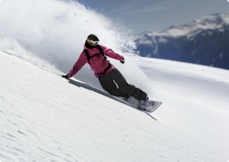

I was born and lived the early years of my life in sunny Los Angeles. All I remember is that it was hot, traffic was always bad, and the city was flat. The bright spots was when my dad would pack our family up in the car and head off and spend all day at the beach. Every opportunity we had, us kids would beg our poor parents to drive the 1 hour+ drive to the beach. When I was about six years old, our family moved up north to, at the time, was the most boring town at the time for a six year old- Ukiah, CA. (Ukiah is located about two hours north of San Francisco.) Ukiah also houses one of the largest Buddhist temples in California- "The City of Ten Thousand Buddhas". This was where I grew up and to this day, am still following the Buddhist priciples that I picked up there. (At least for the most part.)
I went to school at the University of California, Berkeley and graduated with a interdicipliary major in Development Studies. (Political Economic Development of Third-World Countries.) Of course, like a lot of students today, my current job has as nothing to do with the degree I graduated with. However I did enjoy my time at Cal so much that I never left! I am currently a university administrator and for awhile managed one of the business school's MBA program.
When I'm not wrangling MBA students, I enjoy spending my time being active. I love the outdoors and am an avid snowboarder. (I will be honest and say that picture is not me, but I wish it was!) In my spare time, I train in Jiujitsu (No-Gi), Krav Maga, and occationally boxing. You probably find it contradicting that a child of a peaceful religion, spends a lot of her time in very violent sports. Unfortunately I don't have a good explaination except I am practing the Buddhist principle of The Middle Way". (The practice of moderation and finding balances in life.)
I hope you enjoyed reading! Feel free to contact me!